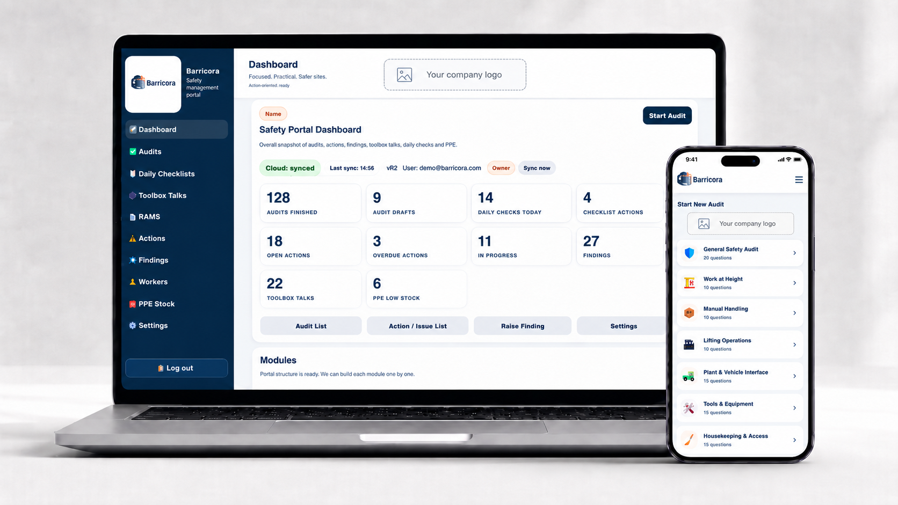

Select the audit
Choose the real activity: Work at Height, MEWP, Lifting, Plant, Hot Work and more.
Construction safety management
Barricora brings focused audits, findings, corrective actions, daily checks, toolbox talks and site records into the same practical workflow.

The actual Barricora system
Switch between the product areas below to see the workflow Barricora is built around.
01 / 05
Start a task-specific audit, answer one question at a time, attach evidence and create actions where improvement is required.
One audit. One connected record.
Choose the real activity: Work at Height, MEWP, Lifting, Plant, Hot Work and more.
Review SPA/RAMS, permits, PPE, rescue arrangements and spotter requirements.
Use Very well managed, Well managed, Poorly managed, Very poorly managed or N/A.
Attach multiple photos, notes and voice input directly to the relevant question.
Poor ratings require an owner and due date. Verify close-out with evidence and finish the PDF report.
Made for the workface
The audit moves one question at a time, so it stays usable on a phone. Photos, comments, speech-to-text and signatures are captured while the evidence is still in front of you.
More than audits
Raise a finding with description, photos, owner and due date. Track Open, In Progress and Closed status.
Complete the simple daily PPE, harness and SPA checks with project and date information.
Record toolbox talks and keep the dashboard count connected to the project workspace.
Maintain the worker list used across the project administration tools.
Manage issued PPE and stock records in the same app instead of another spreadsheet.
Keep RAMS records accessible from the same left-hand navigation.
Search and filter activity covering users, audits, findings, daily checks, toolbox, workers, PPE, RAMS, settings and photos.
Company administrators control support access and account administration from the app.
Subscription plans
No invented user limits, fake features or made-up prices are shown here. The website is ready for Starter, Professional and Business pricing once the actual offer is confirmed.
Request a demo and show us how your team handles audits, findings and close-out today.